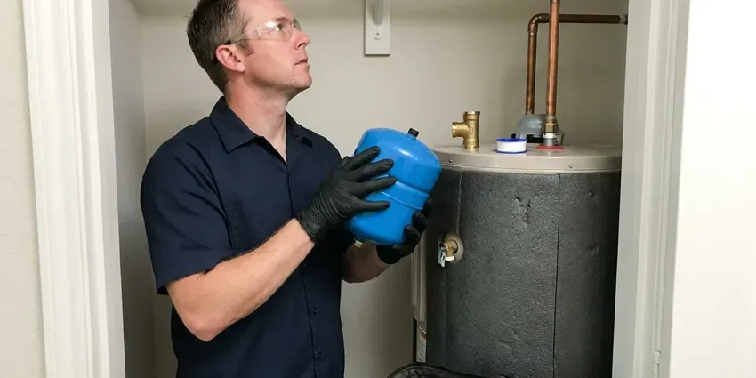

Water Heater Installation in Charleston, SC
Hot water back in your Charleston, SC home, usually within a day, from KBN Plumbing.
- Same-Day Replacements
- Major Brands
- Same-Day Installs
- Permits and Code Work

Water Heater Replacement in Charleston, SC
We carry common 40 and 50 gallon models on our trucks for quicker installs.
New Water Heaters for Charleston, SC Homes
KBN Plumbing gets the call most often after a tank starts leaking at the base. By then it is a replacement, not a repair. We also cover planned upgrades.
Work we handle every week:
- Gas line and electrical connections
- Leak-tested gas connections
- Code venting and expansion tanks

Additional Plumbing Installation Services in Charleston, SC
We install water heaters, pumps, lines, and fixtures across Charleston, SC with careful, permitted work that passes inspection the first time.


Customers
Why Choose KBN Plumbing for Water Heater Installation in Charleston, SC?
Safety and efficiency get checked on every install. Our team works to local building code. That protects the warranty too.
- Good Brands, We install brands that stand behind their tanks, so service is easy years from now.
- Clear Pricing, You get a written estimate before we start.
- Fast Service, Plenty of installs are done on the day you call.
Citywide Coverage
From older neighborhoods to new developments, KBN Plumbing covers all of Charleston. Our crews have worked in most subdivisions here.
Experienced Team
Our plumbers at KBN Plumbing have installed tank, tankless and hybrid units. They train on new models as they come out.
Safety-First Approach
Proper venting, tight gas joints and a working relief valve get confirmed before we leave. We follow plumbing and electrical code throughout.
Trusted Certified Charleston Plumbing Services Professionals
At KBN Plumbing, we take pride in licensed, certified plumbing services throughout Charleston, SC. Those papers on the wall mean something. Every repair, install and maintenance visit follows strict safety and quality rules, and the plumbers doing the work carry recognized industry credentials.
Call Us Now PHCC Plumbing Contractor Recognition
PHCC Plumbing Contractor Recognition Better Business Bureau (BBB) Accreditation
Better Business Bureau (BBB) Accreditation Angi Certified Pro
Angi Certified Pro ISO 9001 Quality Management Certification
ISO 9001 Quality Management CertificationTank and Tankless Water Heaters in Charleston, SC
Emergency Water Heater Replacement in Charleston, SC
Water on the garage floor and no hot water usually means the tank has rusted through. First step is to close the cold water valve above the tank and shut off the gas or the breaker, which stops the leak from getting worse. Common tanks ride on our trucks. Most emergency swaps finish the same day.

Electric Tank Water Heater Installation in Charleston, SC
Without gas service, an electric tank is the usual pick. We match the voltage and breaker size to your panel, and because electric tanks need no vent, they can go in a closet, an attic or a laundry room where a gas unit could not. A drain pan goes under closet installs. Quiet and simple.
Traditional Tank Water Heater Installation in Charleston
Tank heaters still heat most homes' water, holding 40 to 75 gallons at temperature until you need it. Sizing is based on the first-hour rating on the yellow label, which tells you how much hot water the tank can deliver during a busy hour. Gas or electric both work. The fuel hookup, the venting and haul-away are all part of the job.
Commercial Water Heater Installation in Charleston
Restaurants, salons and offices burn through hot water at rates no household tank can keep up with. We install commercial tanks over 100,000 BTU and racked tankless systems, with the venting and gas supply those loads require. We schedule around your hours. Night installs are available.
Gas Water Heater Replacement in Charleston
Swapping a gas water heater comes down to three connections done right, the gas, the vent and the water. We install a new flex connector with a sediment trap, check vent pitch and draft and test every joint with a gas leak detector. Venting is what keeps CO out. We follow code on all of it.
Water Heater Installation Cost in Charleston, SC
Up front, a tank heater costs less than tankless. Tankless jobs cost more mostly because of gas line and vent work, while attic installs, moves and code updates add labor to any type. Your quote lists permits. We compare operating costs so you can choose with real numbers.
Gas Tank Water Heater Installation in Charleston
A gas tank is the most common water heater we install, in 40, 50 and 75 gallon sizes. Each one gets a new gas connector, a sediment trap and a shutoff valve, plus a vent connector pitched up toward the flue at a quarter inch per foot. We test draft before leaving. Gas suits busy households.

Attic and Closet Water Heater Installs in Charleston
Attic and closet installs take more planning than a garage swap. An attic heater needs a pan with its own drain line, a properly routed relief line and enough access to get the old tank out and the new one in. Ceilings are at stake. If moving it makes sense, we can relocate the heater.
Water Heater Plumbers Near You in Charleston, SC
Picking a local contractor means the plumber knows Charleston plumbing and permits. We know what local inspectors look for on a water heater final, which keeps the job moving. Neighbors refer us often.
Local plumbers know local houses, and KBN Plumbing has installed water heaters in Charleston, SC homes of every age. In older houses the tank sits near a chimney, and in newer ones it usually ends up in the garage or attic with plastic venting. Both are routine for us.
KBN Plumbing at a Glance
- Licensed and insured plumbers serving Charleston, SC
- Same-day appointments and 24/7 emergency response
- Clear written estimates, no hidden fees
- 4.8-star rated by 596+ South Carolina customers
Charleston Map
Charleston Information
- Population
- 155,369
- Area codes
- 843/443/803
- Service area
- Charleston and towns within a 40 mile drive
- Nearby
- Mount Pleasant, North Charleston, Goose Creek, Summerville
Hard water and hot garages or attics wear water heaters out faster in Charleston, SC, so sizing and placement matter.
Talk to a Plumber
Reach out to KBN Plumbing for honest, reliable plumbing from people who know the trade in Charleston, SC.
Our Specialized Plumbing Services in Charleston, SC
At KBN Plumbing, you get every kind of plumbing service from one company across Charleston, SC. From leak detection to full system installs, our team works fast and charges fair prices on homes and commercial properties alike. Here are the core services we offer:


How We Install a Water Heater in Charleston, SC
Here is how a water heater install goes at your home in Charleston, SC.
Request a Quote
Call KBN Plumbing at (864) 588-3813 or use our form. We book a visit and give you an honest quote.
Assessment
A licensed plumber visits your Charleston home, checks your hot water use and space, and suggests a size and fuel type.
Installation
Once you approve the quote, we swap in the new heater, with venting and connections done to code.
Frequently Asked Questions About Water Heater Installation in Charleston
Water heater installation in Charleston, SC runs about $1,200 to $4,000 or more. The biggest factors are whether it is a tank or tankless unit, its size, its fuel and whether the gas line or panel needs work. Tankless costs more. We quote it in writing after a look.
It looks simple but involves gas, electrical and plumbing connections, plus a vent that has to carry exhaust out of the house every time the burner fires. A mistake can mean leaks, CO exposure or a fire. A licensed plumber is the safe call.
Popping or rumbling, rust-colored water, leaks or an age past ten years are the common clues. Any one of them can mean replacement is near.
Age, repair cost and efficiency decide it. Past ten years, with frequent breakdowns or a repair quote over half the price of a new unit, replacement is usually the better spend. A leaking tank is always a replacement.
Our crews install Rheem, AO Smith, Bradford White, Noritz and Navien. We can also match an existing brand if you prefer to stay with it.
Permits are common for water heater work. Water heater replacements, sewer line repairs and repiping usually need a permit and an inspection from the local building department. KBN Plumbing takes care of permits and inspections in Charleston.
For two to four people, a 40 or 50 gallon tank usually does the job. Bigger households move up to 75 gallons or tankless.
Most jurisdictions require a permit for replacement. Permits are handled by us when needed.
What Our Customers Say About Our Plumbing Experts

Monica A.
Our water bill nearly doubled in one month with no change in how we used water. The tech checked the meter, heard the leak under the hallway with his equipment, and opened a hole about a foot square. Fixed the same day.
Slab Leak Repair · Bluffton, SC
Carlos V.
Our house still had galvanized pipe, and upstairs the shower was a trickle. The crew repiped everything in PEX over three days and patched every drywall hole before they left. The pressure difference is night and day.
Repiping · North Charleston, SC
Robert G.
The camera showed a full break in our clay sewer line near the street. KBN Plumbing replaced it with a trenchless pipe burst, so the only digging was two small pits in the yard. They let us watch the footage before and after.
Sewer Line Replacement · Mount Pleasant, SC
Lisa C.
Water was pouring out from under the washing machine on a holiday weekend. KBN Plumbing talked me through closing the valves over the phone and had a plumber at the house within ninety minutes. It was a burst fill hose.
Emergency Plumbing · Hilton Head Island, SC
Brian W.
I smelled gas behind the dryer and called right away. The plumber found a corroded flex connector, replaced it, and pressure tested the whole line before turning the gas back on. He let me watch the gauge hold steady for fifteen minutes.
Gas Line Repair · Bluffton, SCJessica T.
We were adding a gas range in a kitchen remodel and needed a new line run from the meter. The plumber pulled the permit, ran the pipe through the crawl space, and had it inspected and approved within the week.
Gas Line Repair · Charleston, SC